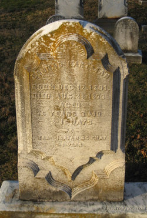
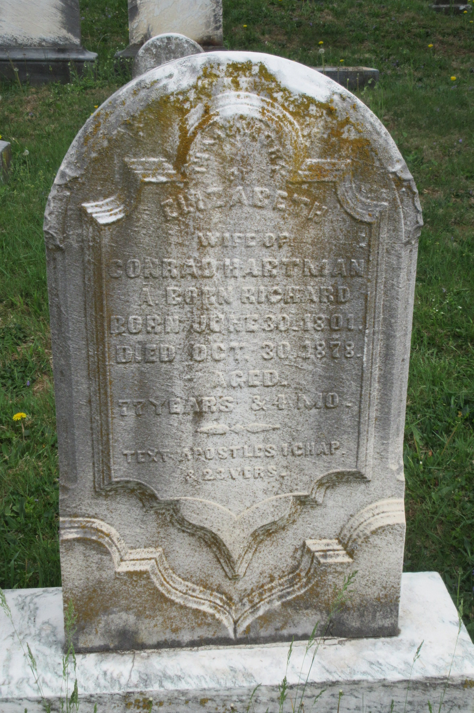

Conrad HARTMAN
born 12 Dec 1801
died 28 Aug 1878
Elizabeth RICHARD
born 30 Jun 1801
died 30 Oct 1878
(great-great-grandparents of Titus Hartman)
married 1823
Daniel R. HARTMAN
born 18 Mar 1824
died 15 Dec 1895
Anna HARTMAN
born 28 Oct 1825
died 27 Jul 1895
William HARTMAN
born 1827
died 1907
George R. (or B.) HARTMAN
born 02 Jan 1831
died 24 Aug 1910
David R. HARTMAN
born 15 Feb 1832
died 11 May 1915
Amos R. HARTMAN
born 1835
died 1907
Deborah R. HARTMAN
born 15 Jul 1839
died 31 Mar 1901
Jacob R. HARTMAN
born 1842
died 1922
Conrad and Elizabeth are buried together at Fairview Cemetery in Boyertown, PA.
 